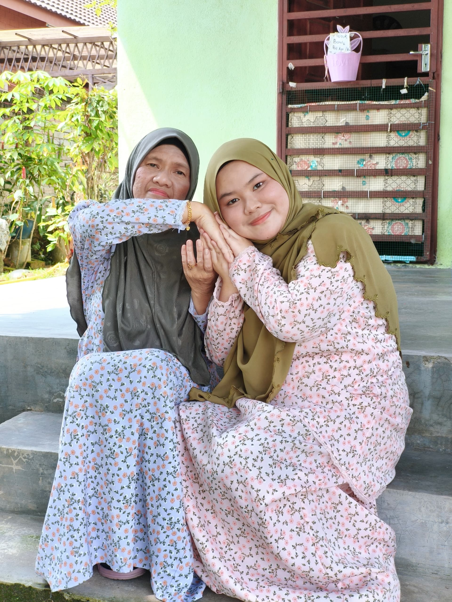

MY SMOL FAMILY
My precious, incredible, gorgeous Mom and I. I am also an only child in my smol family. Fyi, my father passed away in 2020.
My mother's name is Rohani Ahmad Safian. She is the fifth child out of seven siblings. My mom's hobbies are that she loves to listen to songs using a radio channel on her phone while she is cooking or before she sleeps.
My mom is my biggest inspiration — strong, kind, and always there for me, no matter what. She raised me on her own with endless love and patience. Even though our family is small, it's filled with warmth, laughter, and an unbreakable bond. She's not just my mother; she's my hero, my comfort, and my best friend.
She always encourages me to be strong and never gives up, no matter how tough life gets. Every little thing she does reminds me how lucky I am to be her daughter. I hope one day I can make her proud and give her the happiness she truly deserves. For now, I just want to hold on to every moment I have with her and never take her love for granted. She is, and always will be, my home.


This is my mother's side of the family.
MY BIG FAMILY
Uncles, Aunties, Cousins, & Niece .
During Hari Raya 2025, after we had a "bacaan tahlil & doa selamat".

MY BELOVED CAT - ADIK
This is my fluffy little companion, Adik. My cat has soft greyish-black fur and a cute little short tail. I don't know how old it is because, actually, Adik came to our house out of the blue asking for food, and my mom thought she was a stray cat. At that time, she was still a kitten; lastly, we agreed to take care of Adik.
Sometimes Adik is fierce, sometimes Adik is clingy, and Adik always ends up in little catfights, and that’s why he often comes home with scratches — but he still walks like a champ. Adik likes to sleep next to my mom at night as a companion. How sweet it is..